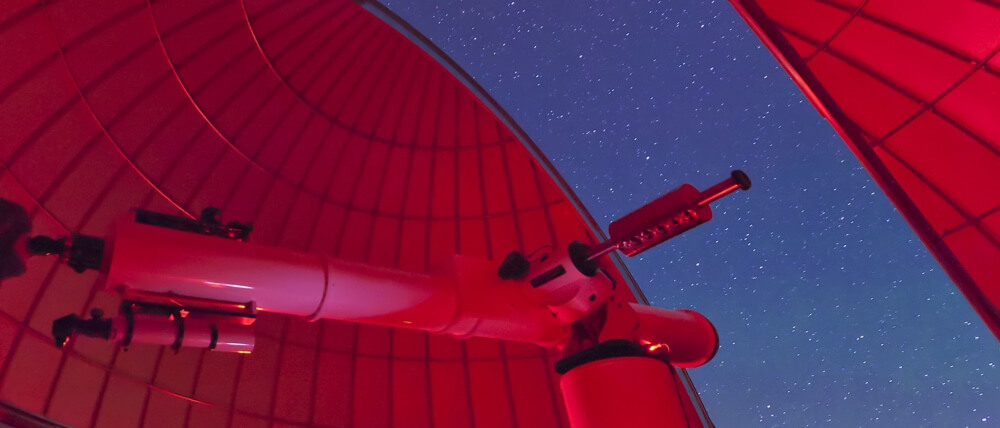
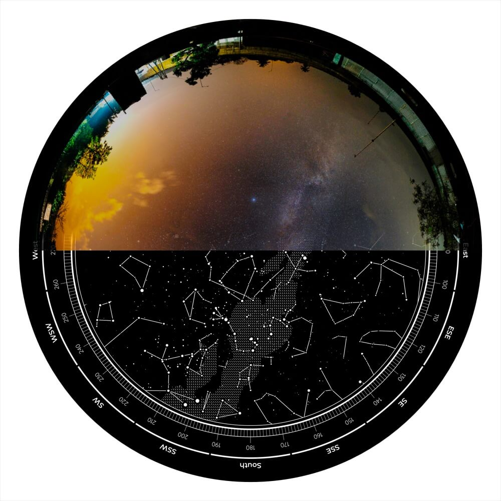
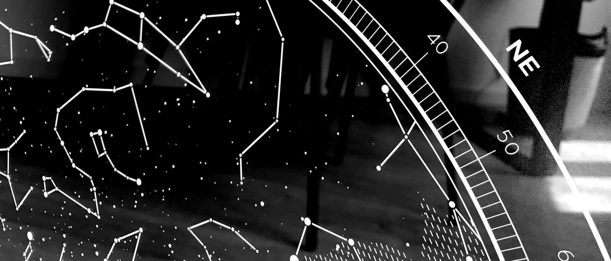

Watch this 30 seconds video to learn how Under Lucky Stars works.
When you are ready, design your star map here.
Humanity has always been fascinated by the shiny dots in the sky. Over millennia, we have found repeating patterns in the movement of the stars and planets. Babylonians created predictive charts (so-called ephemeris) of the movement of celestial objects as early as 350 BC. Technology has come a long way since, and today we are able to replay and predict the movement of the stars from any location and time, with high precision.
At Under Lucky Stars, we are making our star maps with the greatest possible attention to scientific accuracy. We use the Bright Star Catalog from Yale University as our main source of celestial data, among several other astronomical databases. It contains galactic coordinates of all the stars visible from Earth with naked eye. These coordinates place each star in a galactic coordinate system. When creating a map, we process six high precision data points of over 9,000 stars.
For the position of a star in the sky at a particular place and date on Earth, we calculate the azimuth and elevation of the star, based on the geolocation and time coordinates from that special moment chosen by you. The complex astronomical calculus involved in celestial mechanics ensures high fidelity and uniqueness of each map.
Our star maps are verified by a third party for accuracy. This helps you ensure that they are genuine and avoid fake knock-offs. You can read more about it here.
Once we have the position of each star in the sky, we draw a stereographic projection of the celestial hemisphere with all the visible stars. Through experimentation we found that this particular projection creates the most visually pleasing and easy to follow map.

The star map shows the projection of the visible sky with the cardinal directions (North, South, East, West) indicated. The stars that are close to the edge of the circle were closer to the horizon in your chosen moment, while stars close to the center of the circle were visible right above your head. The size of each dot indicates the apparent magnitude of the star. The celestial hemisphere projected to a plane above it.
We also draw the visible constellations from the 88 official ones ones on the map. Perhaps you will recognize some of them, such as Cassiopeia, Orion or Leo. To complete the map in its beauty, we add the visible boundaries of our home galaxy, the Milky Way, also adjusted to the location and time so that your map is truly special.

We think that our maps look the best when they are printed on high quality paper. We use 200 GSM smooth fine art paper and print at 300 DPI resolution. GSM (grams per square meter) refers to the thickness of the paper. Most household printer papers are 90-100 GSM, while typical poster prints are 120-140 GSM.

Check our list of Frequently Asked Questions or search our entire Knowledge Base.